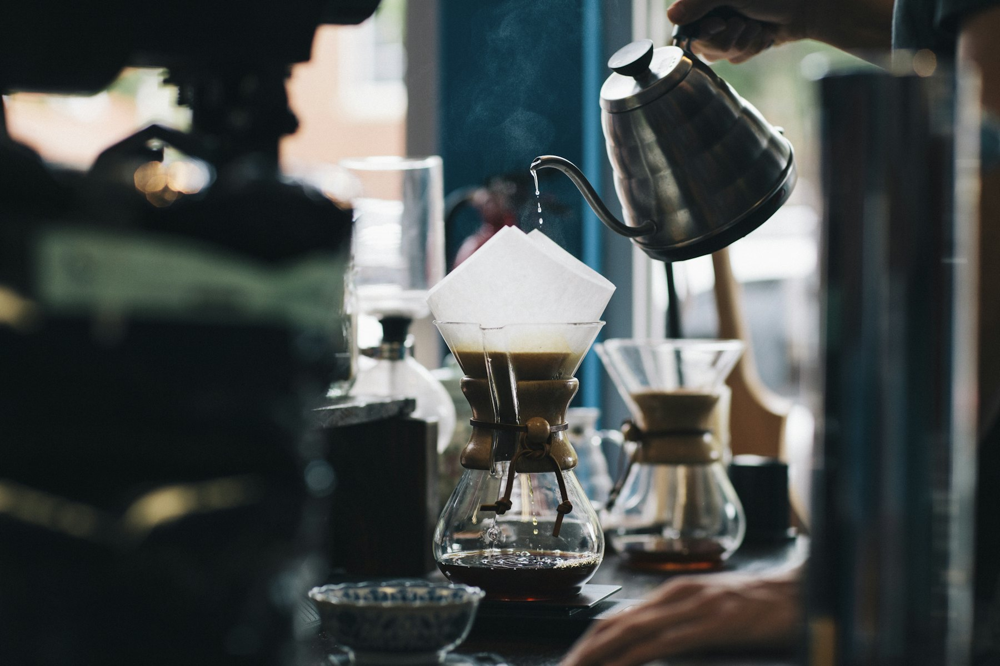
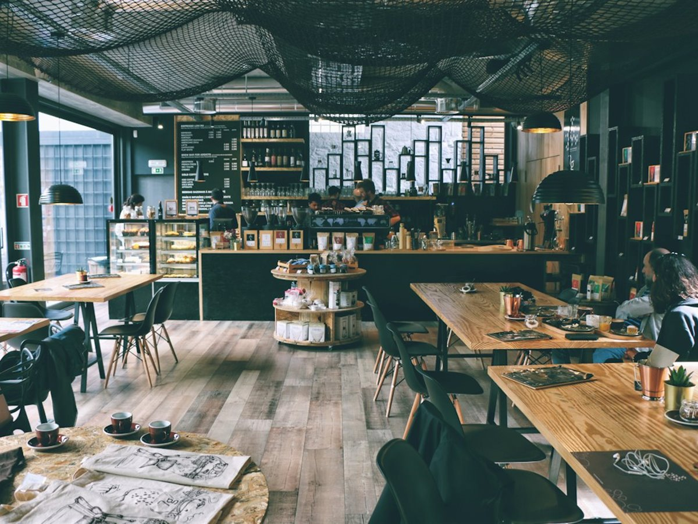
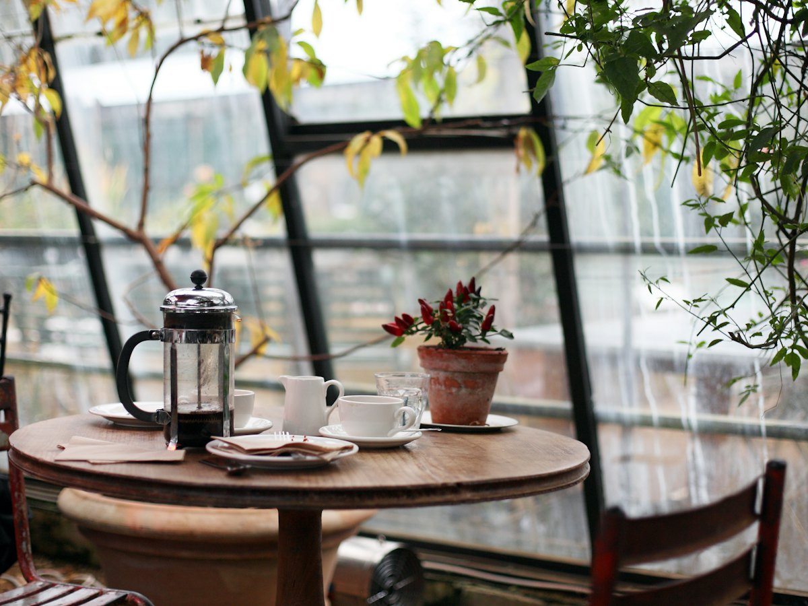
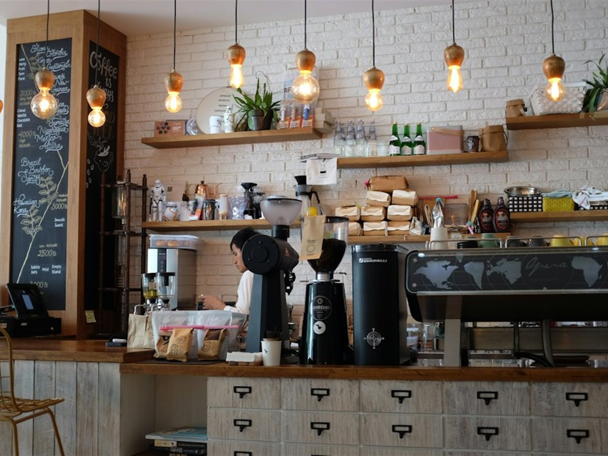
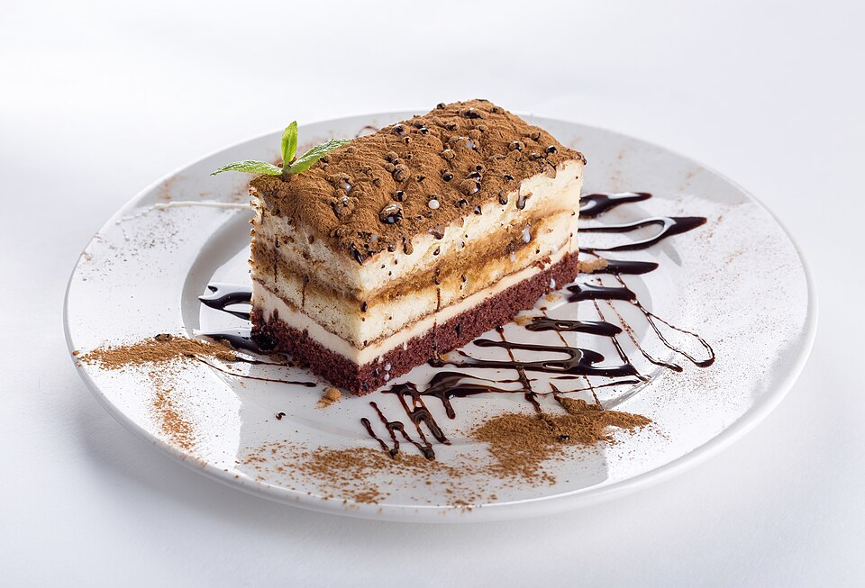
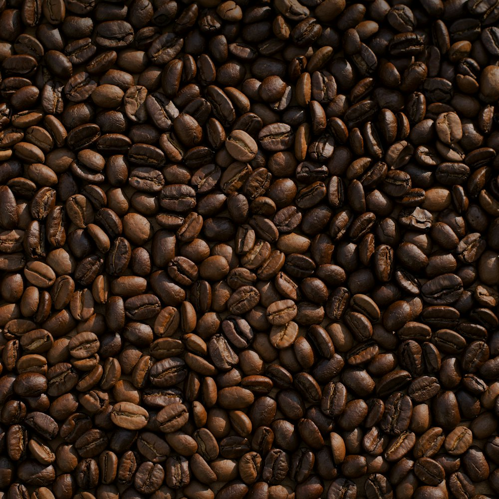

Ruang
Ruang.
Empat belas meja, satu ruang panjang. Terang di pagi, tenang setelah jam tiga. Tidak ada meja yang menghadap televisi.






Untuk kerja
WiFi sore.tamu, colokan di bawah meja jendela dan bar. Musik naik setelah jam lima; sebelum itu cukup untuk menelepon.
Untuk bicara
Meja panjang di tengah muat enam orang. Kalau perlu lebih, telepon sehari sebelumnya—kami tidak menahan meja tanpa konfirmasi.
Untuk sendiri
Meja kecil di ruang kaca menghadap tanaman. Paling sepi sebelum jam sebelas, atau setelah jam tujuh malam.